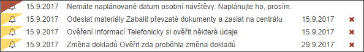

Přehled urgencí, připomínek a zpráv
Pod detailem dlužníka je prostor, kde se objevují případné Urgence, Připomínky a Zprávy

Urgence - označená červeně. Jedná se o 18 typů upozornění od systému či centrály na nevyřešené věci. Urgence je možné zrušit pouze akcí, která je vyžadována. Například: "Nový spis, přijměte jej, prosím." Uživatel spis přijme a urgence bude automaticky odstraněna. Urgence má vždy datum vytvoření, nadpis a text.
Připomínka - označená žlutě. Uživatel může vytvořit Připomínku na spis či dlužníka sám, podle své potřeby. Připomínka by ho měla upozornit na řešení nějaké události. Uživatel připomínku může kdykoliv zrušit/odstranit křížkem v pravé části. Připomínka má vždy datum vytvoření, nadpis, text a datum řešení.
Zpráva - označená zeleně. Jedná se o informativní hlášení ke spisu. Informace se týkají např. změn, které jsou důležité pro další vývoj případu (zkrácení termínu vrácení spisu, akce na spise atd.)